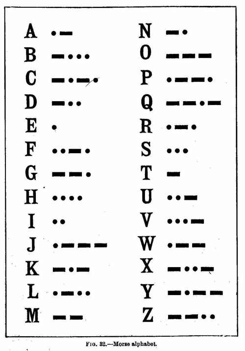
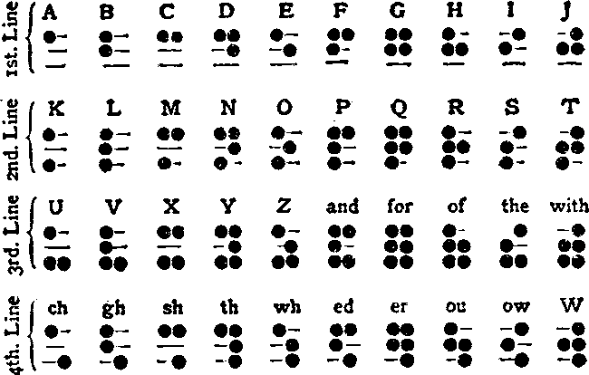

Assorted notes on the English language.
Oulipo Social
Oulipo social is a fedi instance where the letter is not allowed. Try to stop looking for synonyms; if you try to swap out individual words, you'll find it tough going. Pull back and think abstractly about what you want to say and find words for that.
Thorn
Thorn or þorn (Þ, þ) is a letter in the Old English, Gothic, Old Norse, Old Swedish, and modern Icelandic alphabets, as well as some dialects of Middle English.
Thorn in the form of a "Y" survives in pseudo-archaic uses, particularly the stock prefix "Ye olde". The definite article spelt with "Y" for thorn is often jocularly or mistakenly pronounced /jiː/ ("yee") or mistaken for the archaic nominative case of the second person plural pronoun, "ye", as in "hear ye!". In fact, the y in the pronoun would have been spelled with a yogh, ȝe, rather than a y.
English Prime is a version of the English language that excludes all forms of the verb "to be", including all conjugations, contractions and archaic forms. Its goal is to leads to a less dogmatic style of language that reduces the possibility of misunderstanding or conflict.
Bourland sees specifically the "identity" and "predication" functions as pernicious, but advocates eliminating all forms for the sake of simplicity. In the case of the "existence" form (and less idiomatically, the "location" form), one might (for example) simply substitute the verb "exists". Other copula-substitutes in English include taste, feel, smell, sound, grow, remain, stay, and turn, among others a user of E-prime might use instead of "to be".
| Identity | The cat is my only pet |
| Class membership | Garfield is a cat |
| Class inclusion | A cat is an animal |
| Predication | The cat is furry |
| Auxiliary | The cat is sleeping |
| Existence | There is a cat |
| Location | The cat is on the mat |
For example, instead of saying, "I am depressed," a student was asked to eliminate that emotionally primed verb and to say something else, such as, "I feel depressed when ..." or "I tend to make myself depressed about ..."
Spivak Pronoun
The Spivak pronouns are a set of gender-neutral pronouns in English.
| Masculine | he laughs | I hugged him | his heart warmed | that is his |
| Feminine | she laughs | I hugged her | her heart warmed | that is hers |
| They(s.) | they laugh | I hugged them | their heart warmed | that is theirs |
| Spivak | e laughs | I hugged em | eir heart warmed | that is eirs |
The American Sign Language has a set of 26 signs which can be used to spell out words.

Morse code is a telecommunication method encoding text characters as sequences of two different signal durations.
Braille is a tactile writing system used by people who are visually impaired.
Assorted notes on various nautical language systems.

celestial navigation
- Zenith: The imaginary point directly above a particular location, opposite to the apparent gravitational force at that location.
- Azimuth: The angle offset between the north vector and target's vector on the horizontal plane.
- Longitude: The east-west position of a point on the Earth's surface.
- Latitude: The north-south position of a point on the Earth's surface.
- Nautical Mile: Defined as 1852 meters, or one minute of angle along a meridian on the Earth.
- LAN: Local Apparent Noon.
- NSL: Noon sight latitude.
- GHA: Greenwich hour angle.
- Sun altitude offset: 4 seconds off is equal to 1 nautical mile.
incoming thousand rooms